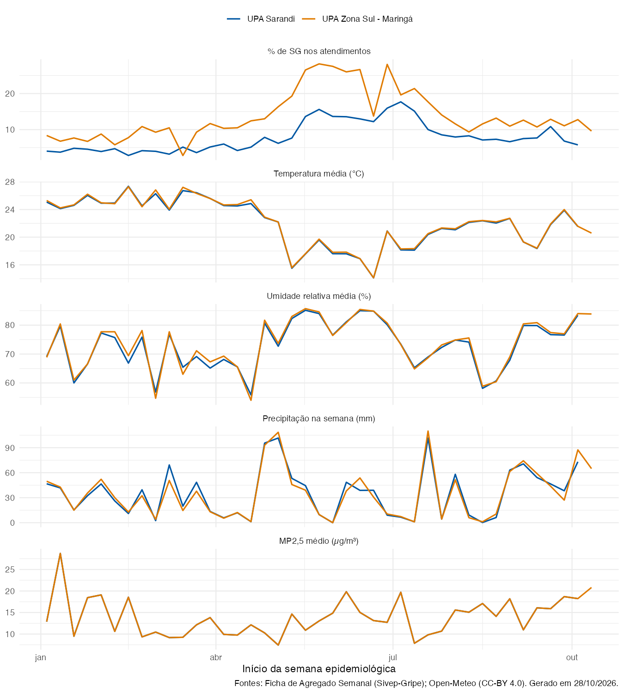

| Mesma semana | 1 semana antes | 2 semanas antes | 3 semanas antes | |
|---|---|---|---|---|
| UPA Sarandi | ||||
| Temperatura média (°C) | −0,85 | −0,90 | −0,82 | −0,81 |
| Temperatura mínima da semana (°C) | −0,76 | −0,79 | −0,80 | −0,74 |
| Temperatura máxima da semana (°C) | −0,74 | −0,75 | −0,73 | −0,64 |
| Amplitude térmica média (°C) | −0,38 | −0,40 | −0,33 | −0,36 |
| Umidade relativa média (%) | 0,41 | 0,48 | 0,42 | 0,42 |
| Umidade relativa mínima (%) | 0,47 | 0,45 | 0,44 | 0,28 |
| Precipitação na semana (mm) | −0,14 | 0,00 | 0,01 | 0,09 |
| MP2,5 médio (µg/m³) | 0,10 | 0,13 | −0,09 | −0,17 |
| MP10 médio (µg/m³) | 0,10 | 0,13 | −0,09 | −0,17 |
| Ozônio médio (µg/m³) | −0,63 | −0,71 | −0,61 | −0,68 |
| NO₂ médio (µg/m³) | −0,02 | 0,12 | −0,11 | −0,13 |
| CO médio (µg/m³) | 0,59 | 0,61 | 0,51 | 0,49 |
| Pior IQA (padrão EUA) da semana | −0,14 | −0,09 | −0,33 | −0,34 |
| UPA Zona Sul - Maringá | ||||
| Temperatura média (°C) | −0,80 | −0,71 | −0,74 | −0,63 |
| Temperatura mínima da semana (°C) | −0,73 | −0,68 | −0,67 | −0,56 |
| Temperatura máxima da semana (°C) | −0,66 | −0,61 | −0,70 | −0,53 |
| Amplitude térmica média (°C) | −0,36 | −0,17 | −0,31 | −0,27 |
| Umidade relativa média (%) | 0,38 | 0,30 | 0,41 | 0,39 |
| Umidade relativa mínima (%) | 0,37 | 0,27 | 0,40 | 0,26 |
| Precipitação na semana (mm) | −0,04 | −0,16 | −0,04 | 0,01 |
| MP2,5 médio (µg/m³) | −0,04 | −0,00 | −0,22 | −0,09 |
| MP10 médio (µg/m³) | −0,03 | 0,00 | −0,23 | −0,10 |
| Ozônio médio (µg/m³) | −0,66 | −0,56 | −0,70 | −0,57 |
| NO₂ médio (µg/m³) | 0,03 | 0,07 | −0,11 | 0,09 |
| CO médio (µg/m³) | 0,41 | 0,42 | 0,34 | 0,42 |
| Pior IQA (padrão EUA) da semana | −0,28 | −0,19 | −0,39 | −0,32 |
Clima e casos
Painel atualizado em 28/10/2026 · Período analisado: SE 1 a SE 37 de 2026 (04/01/2026 a 19/09/2026) · Ficha SG exportada do SIVEP-Gripe em 24/09/2026 · Agregado semanal exportado em 28/10/2026
Esta página cruza a proporção de atendimentos por Síndrome Gripal nas unidades sentinelas com o clima e a qualidade do ar de cada semana epidemiológica, no município da unidade.
Leitura exploratória. Correlação não indica causa. São cerca de 40 semanas por unidade, sem controle da sazonalidade, da circulação viral ou de feriados. Uma correlação forte com a temperatura, por exemplo, pode refletir em boa parte a sazonalidade dos vírus respiratórios, e não só o efeito do frio.
Fontes e método
- Casos: Ficha de Agregado Semanal do Sivep-Gripe — atendimentos por SG (
SG_TOTAL) divididos pelo total de atendimentos da unidade (TC_TOTAL), por semana epidemiológica. - Clima: Open-Meteo — Historical Weather API (dados de modelo/reanálise, não de estação meteorológica), diário, resumido por SE.
- Qualidade do ar: Open-Meteo — Air Quality API, baseada na previsão global CAMS (grade de cerca de 45 km). Valores horários resumidos por dia e depois por SE. Como Maringá e Sarandi estão na mesma célula da grade, os valores de qualidade do ar são iguais para as duas unidades.
- Correlação: Spearman, entre a % de SG da semana e cada variável na mesma semana e de 1 a 3 semanas antes (defasagem).
Dados do Open-Meteo sob licença CC-BY 4.0.
Séries semanais

Correlação entre % de SG e clima
Valores de rho de Spearman: de −1 (quando a variável sobe, a % de SG cai) a +1 (sobem juntos); perto de 0, sem relação. Em negrito, correlações com p < 0,05.
Últimas semanas
| SE | Início da SE | Atendimentos SG | Total de atendimentos | % SG | Temp. média (°C) | Umidade média (%) | Chuva (mm) | MP2,5 (µg/m³) |
|---|---|---|---|---|---|---|---|---|
| UPA Sarandi | ||||||||
| 40/2026 | 04/10/2026 | 107 | 1855 | 5,8 | 21,5 | 83,4 | 73,1 | 18,2 |
| 39/2026 | 27/09/2026 | 135 | 1980 | 6,8 | 23,9 | 76,6 | 38,3 | 18,7 |
| 38/2026 | 20/09/2026 | 198 | 1826 | 10,8 | 21,8 | 76,7 | 46,5 | 15,9 |
| 37/2026 | 13/09/2026 | 132 | 1718 | 7,7 | 18,4 | 79,9 | 54,2 | 16,1 |
| 36/2026 | 06/09/2026 | 138 | 1838 | 7,5 | 19,3 | 79,9 | 70,6 | 11,0 |
| 35/2026 | 30/08/2026 | 128 | 1929 | 6,6 | 22,7 | 67,9 | 63,1 | 18,2 |
| UPA Zona Sul - Maringá | ||||||||
| 41/2026 | 11/10/2026 | 258 | 2688 | 9,6 | 20,6 | 83,9 | 64,9 | 20,8 |
| 40/2026 | 04/10/2026 | 286 | 2240 | 12,8 | 21,6 | 84,0 | 87,4 | 18,2 |
| 39/2026 | 27/09/2026 | 285 | 2578 | 11,1 | 24,0 | 77,0 | 27,1 | 18,7 |
| 38/2026 | 20/09/2026 | 293 | 2276 | 12,9 | 21,9 | 77,4 | 43,8 | 15,9 |
| 37/2026 | 13/09/2026 | 281 | 2619 | 10,7 | 18,4 | 80,9 | 58,9 | 16,1 |
| 36/2026 | 06/09/2026 | 288 | 2280 | 12,6 | 19,3 | 80,4 | 74,3 | 11,0 |
Tabelas completas para download: casos e clima por SE · clima diário por município · correlações com valor de p (CSV separado por ;).